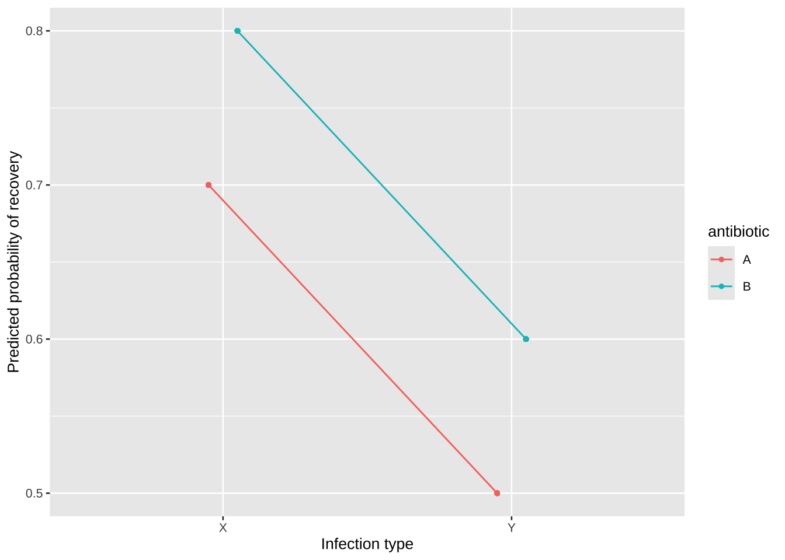

library(tidyverse)
library(rmarkdown)
library(coin)11 Chi-square test
The Chi-square test is a statistical test commonly used to determine whether there is a significant association between categorical variables. It can be applied in several different contexts, including testing for goodness-of-fit, independence, and homogeneity.
11.1 Prerequisite
11.2 Chi-square test for 2x2 tables
11.2.1 Chi-square distribution
The Chi-square distribution is a probability distribution commonly used in hypothesis testing and confidence interval estimation for variance and categorical data analysis, particularly in the Chi-square test for independence and goodness-of-fit.
The probability density function of the Chi-square distribution with k degrees of freedom is:
f(x; k) = \frac{1}{2^{k/2} \Gamma(k/2)} x^{(k/2 - 1)} e^{-x/2}
where x \geq 0, k is the degrees of freedom, \Gamma is the Gamma function.
11.2.2 Visualization
The shape of the Chi-square distribution is determined by its degrees of freedom. The code below will plot Chi-square distributions with different degrees of freedom to demonstrate how the shape of the distribution changes.
It is positively skewed for low degrees of freedom but becomes more symmetrical as the degrees of freedom increase. Since it’s a distribution of squared values, the Chi-square statistic is always non-negative, meaning it ranges from 0 to infinity.
11.2.3 2x2 contingency table
2x2 contingency table, also known as fourfold table , is a matrix used to display the frequencies of two categorical variables with two levels each (see Table 11.1 ).
| event | non-event | total | |
|---|---|---|---|
| exposed | a | b | a + b |
| non-exoposed | c | d | c + d |
| total | a + c | b + d | N = a + b + c + d |
where a is the number of events in the exposed group, b is the number of non-events in the exposed group, c is the number of events in the non-exposed group, d is the number of non-events in the non-exposed group.
For example, you might use a fourfold table to study whether a new treatment (exposure) improves the survival rates (event) compared to a standard treatment.
| heart attack (survived) | heart attack (died) | total | |
|---|---|---|---|
| new treatment | 30 | 20 | 50 |
| standard treatment | 15 | 35 | 50 |
| total | 45 | 55 | 100 |
Chi-square statistic
The Chi-square statistic for a 2x2 table is calculated using the formula:
\chi^2 = \frac{N(ad - bc)^2}{(a + b)(c + d)(a + c)(b + d)}
where N is the total sample size, N = a + b + c + d, ad - bc is the product difference between rows and columns.
Yates’ continuity correction
Yates’ continuity correction is a statistical adjustment applied to the Chi-square test for 2x2 contingency tables to correct for the fact that the Chi-square test is an approximation of a continuous distribution, but the data in a contingency table are discrete. This correction makes the Chi-square test more conservative, reducing the likelihood of type I errors (false positives) by slightly lowering the Chi-square statistic.
With Yates’ correction, the formula for the Chi-square statistic is:
\chi^2 = \frac{(|ad - bc| - 0.5N)^2 N}{(a+b)(c+d)(a+c)(b+d)}
- When to use Yates’ correction
- It is generally recommended for 2x2 tables with small sample sizes, particularly when any expected frequency is less than 10 but greater than 5. It is automatically applied in
chisq.test()for 2x2 tables unless specified otherwise. - When you want to be more conservative and reduce the chance of false positives (finding a significant result when there is none), Yates’ correction can help.
- It is generally recommended for 2x2 tables with small sample sizes, particularly when any expected frequency is less than 10 but greater than 5. It is automatically applied in
- When not to use Yates’ correction
- When the sample size is large, or the expected frequencies in each cell are well above 5, Yates’ correction is not necessary and may be too conservative.
- Yates’ correction is only relevant for 2x2 tables, so it’s ignored for larger contingency tables.
It is generally recommended for small sample sizes but can be unnecessary or even too conservative in larger samples.
11.2.4 Chi-square test
The Chi-square test for 2x2 tables is commonly used to assess whether there is an association between two categorical variables. In medical research, this test is frequently applied to analyze whether exposure (e.g., treatment, risk factor) to a risk factor is associated with a particular outcome (e.g., disease, recovery).
In R, you can perform a Chi-square test for the 2x2 contingency table using the chisq.test() function or fisher.test() function.
When to use chisq.test()
- Chi-square test works well when the sample size is large enough, typically when the expected frequency in each cell of the contingency table is 5 or more.
- Chi-square test provides an approximate result based on the Chi-square distribution. It is not suitable for small sample sizes, but it’s efficient for larger data sets.
- Chi-square test assumes the total row and column frequencies can vary. It’s used when you don’t have fixed marginal totals.
When to use fisher.test()
- Fisher’s exact test (discussed in Section 11.4 )is recommended for small sample sizes, particularly when any expected cell count is less than 5. It calculates the exact p-value without relying on large sample approximations.
- Fisher’s exact test assumes that both the row and column totals are fixed. This makes it a more conservative test compared to the Chi-square test.
- Fisher’s test is preferred when dealing with sparse data (i.e., a lot of cells with small counts), as it doesn’t rely on assumptions of normality or expected frequencies.
Example 1:
To determine if a new treatment for heart attack patients improves survival rates compared to a standard treatment, a total of 100 patients who have suffered heart attacks were randomly divided into two groups: 50 patients receive new treatment, 50 patients receive standard treatment. The outcome of interest is whether the patient survived (recovered or showed significant improvement) or died (passed away due to complications from the heart attack) after the treatment. The observed data is summarized in Table 11.2 . Is there a significant difference in survival rates between patients who received the new treatment and those who received the standard treatment?
# Create a 2x2 contingency table
matrix(c(30, 20, 15, 35), nrow = 2, byrow = T) |>
chisq.test(correct = F)#>
#> Pearson's Chi-squared test
#>
#> data: matrix(c(30, 20, 15, 35), nrow = 2, byrow = T)
#> X-squared = 9.0909, df = 1, p-value = 0.002569The calculated Chi-square statistic is 9.0909, p-value is 0.002569, less than the significance level 0.05. This indicates a statistically significant difference in survival rates between the two treatments.
11.3 Chi-square test for paired 2x2 tables
Chi-square test for paired 2x2 table is typically used for analyzing paired categorical data, such as when the same subjects are measured before and after an intervention, or when two related groups are compared. In this case, the McNemar’s test is commonly applied for paired data rather than the standard Chi-square test, as it is designed specifically to handle dependent data (paired observations).
11.3.1 McNemar’s Test
McNemar’s test focuses only on the off-diagonal cells b and c, which represent discordant pairs (i.e., patients who switched their outcomes between pre- and post-treatment). The cells a and d (concordant pairs) are ignored in this test because they reflect no change in outcome.
The test statistic without continuity correction:
\chi^2 = \frac{(b - c)^2}{b + c},
The test statistic with continuity correction:
\chi^2 = \frac{(|b - c| - 1)^2}{b + c}
where b is the number of individuals who succeeded in pre-treatment but failed in post-treatment, c is the number of individuals who failed in pre-treatment but succeeded in post-treatment, 1 in the formula is a continuity correction applied for small sample sizes.
The continuity correction is especially important when b + c is small (e.g., less than 40). It helps to prevent overestimating the test statistic. For larger sample sizes, the correction has a smaller impact, and some recommend not applying it (i.e., setting correct = FALSE), as it can be overly conservative.
Example 2:
A study is conducted to evaluate the efficacy of a new vaccine in preventing the flu. The same group of individuals is tested before and after receiving the vaccine to see if they develop flu symptoms. The observed data is summarized in Table 11.3 . Determine whether the vaccine have a significant effect on reducing flu incidence.
| flu post-vaccine | no flu post-vaccine | total | |
|---|---|---|---|
| flue pre-vaccine | 10 (had flu both times) | 25 (had flu pre, no flu post) | 35 |
| no flu pre-vaccine | 5 (no flu pre, had flu post) | 60 (no flu both times) | 65 |
| total | 15 | 85 | 100 |
matrix(c(10, 25, 5, 60), nrow = 2, byrow = T) |>
mcnemar.test(correct = T)#>
#> McNemar's Chi-squared test with continuity correction
#>
#> data: matrix(c(10, 25, 5, 60), nrow = 2, byrow = T)
#> McNemar's chi-squared = 12.033, df = 1, p-value = 0.0005226If the p-value from the McNemar’s test is less than the significance level (typically \alpha = 0.05), you would reject the null hypothesis and conclude that the vaccine had a significant effect on reducing flu incidence. If the p-value is greater than the significance level, the null hypothesis is not rejected, and the data do not provide sufficient evidence to conclude that the vaccine significantly changed flu outcomes. Here the p-value is less than 0.05.
This type of paired data analysis is common in medical research, especially in pre-post studies where the same subjects are followed over time to assess the impact of an intervention (e.g., medication, surgery, or vaccines).
11.4 Fisher’s exact test
The Fisher’s exact test is used to determine if there are nonrandom associations between two categorical variables, typically in a 2x2 contingency table (fourfold table). It is commonly applied when sample sizes are small, making the Chi-square test unreliable due to low expected frequencies in one or more cells.
Fisher’s exact test calculates the exact probability of obtaining a table at least as extreme as the one observed, assuming the null hypothesis is true. The probability is calculated based on the hypergeometric distribution, and Fisher’s test uses this distribution to calculate the p-value.
The formula for the probability of observing a given 2x2 table is:
P = \frac{(a+b)!(c+d)!(a+c)!(b+d)!}{a!b!c!d!N!}
where N = a + b + c + d is the total sample size.
Example 3:
A clinical trial is conducted to evaluate the effectiveness of a new drug for treating hypertension. Patients are divided into treatment group and control group. After treatment, the number of patients whose blood pressure returned to normal (cured) and those whose blood pressure remained high (not cured) is recorded. The data collected is in . Determine if the new drug shows a statistically significant difference in its effectiveness compared to the control.
| blood pressure normal | Blood pressure high | total | |
|---|---|---|---|
| treatment | 8 | 2 | 10 |
| control | 3 | 7 | 10d |
| total | 11 | 9 | 20 |
In R, Fisher’s exact test can be performed using the fisher.test() function.
matrix(c(8, 2, 3, 7), nrow = 2, byrow = T) |>
fisher.test()#>
#> Fisher's Exact Test for Count Data
#>
#> data: matrix(c(8, 2, 3, 7), nrow = 2, byrow = T)
#> p-value = 0.06978
#> alternative hypothesis: true odds ratio is not equal to 1
#> 95 percent confidence interval:
#> 0.8821175 127.0558418
#> sample estimates:
#> odds ratio
#> 8.153063The result of Fisher’s Exact Test will give you a p-value. Here p-value is 0.06978, above 0.05, not reject the null hypothesis. This means the data do not provide sufficient evidence to conclude that the new drug shows a better effectiveness compared to control.
11.5 Chi-square test for R×C tables
The Chi-square test for R×C contingency tables is used to assess whether there is an association between two categorical variables where one variable has R categories and the other has C categories. This is also called the Chi-square test of independence.
11.5.1 Comparison of multiple sample rates
When comparing multiple sample rates, several statistical methods are commonly used, including the Chi-square test and Cochran’s Q test. The choice of method depends on the structure of the data and the research question.
Chi-Square test for rates
The Chi-square test is widely used to compare rates across multiple independent samples. It tests whether the observed differences between sample proportions are statistically significant.
Example 4:Suppose you want to compare recovery rates between three hospitals for a specific disease. The data is in Table 11.5 . Determine if the recovery rates are significantly different between these hospitals.
Table 11.5: The recovery results of a disease in three hospitals recovered not revovered hospital A 50 20 hospital B 55 15 hospital C 65 5 Here is
chisq.test()is used to conduct this kind of test. In Section 11.6 , we reanalyze this example using functionprop.test(), which gives the same result.matrix(c(50, 20, 55, 15, 65, 5), nrow = 3, byrow = T) |> chisq.test(correct = F)#> #> Pearson's Chi-squared test #> #> data: matrix(c(50, 20, 55, 15, 65, 5), nrow = 3, byrow = T) #> X-squared = 10.809, df = 2, p-value = 0.004497Cochran’s Q test
Cochran’s Q test is an extension of the Chi-Square test, designed for comparing rates across multiple samples in paired or repeated measures settings. It is typically used with binary outcomes (e.g., “yes/no” or “success/failure”).
Example 5:A study is conducted to test the effectiveness of a new drug across three time points (1 month, 3 months, and 6 months) on the same group of patients. The outcome is whether the treatment was successful (1) or not (0), recorded for 10 patients in Table 11.6 . Determine if there is a significant difference in success rates across the three time points.
Table 11.6: The recovery results of a disease in three hospitals id 1 month 3 months 6 months 1 1 0 1 2 0 0 1 3 1 1 1 4 0 1 0 5 1 1 1 6 1 0 1 7 0 1 0 8 1 1 1 9 1 0 0 10 1 1 1 data.frame( id = factor(1:10), time = factor(rep(c("1 Month", "3 Months", "6 Months"), each = 10)), outcome = c(1,0,1,0,1,1,0,1,1,1, 0,0,1,1,1,0,1,1,0,1, 1,0,0,1,0,1,1,1,0,1) ) |> symmetry_test(outcome ~ time | id, data = _, teststat = "quadratic")#> #> Asymptotic General Symmetry Test #> #> data: outcome by #> time (1 Month, 3 Months, 6 Months) #> stratified by id #> chi-squared = 0.28571, df = 2, p-value = 0.8669Cochran-Armitage trend test
If you want to test whether there is a linear trend in the rates across ordered groups, you can use the Cochran-Armitage test for trend. This test is useful for ordered categorical data and examines if there is a significant linear trend in proportions.
Example 6:Suppose you have data from a study on smoking and lung cancer risk. The groups are non-smokers, light smokers, and heavy smokers, and the outcome is the presence of lung cancer (yes/no). The data is listed in Table 11.7 . Determine if there’s a linear trend in cancer risk across the ordered smoking categories.
Table 11.7: The data from a study on smoking and lung cancer risk group cancer no cancer noon-smokers 5 95 light smokers 15 85 heavy smokers 40 60 with(df, prop.trend.test(cancer, cancer + `no cancer`))#> #> Chi-squared Test for Trend in Proportions #> #> data: cancer out of cancer + `no cancer` , #> using scores: 1 2 3 #> X-squared = 38.281, df = 1, p-value = 6.125e-10It is specifically designed to detect linear trends in rates across ordered groups. This test is particularly useful when you have binary outcomes (e.g., success/failure) across different levels of an ordinal independent variable (e.g., increasing doses of a drug). It directly tests for a linear trend in the proportions of success.
11.5.2 Comparison of multiple sample proportions
Example 7:
Suppose you are studying the distribution of a gene variant related to a certain disease in two groups: a healthy control group, and a disease group. You aim to compare the frequencies of the AA, Aa, and aa genotypes between these groups. The data is in Table 11.8 . Determine whether there is a significant difference in the distribution of genotypes between the healthy and disease groups.
| group | AA | Aa | aa |
|---|---|---|---|
| health group | 40 | 35 | 25 |
| disease group | 30 | 45 | 25 |
# Create the data matrix
matrix(c(40, 35, 25, 30, 45, 25), nrow = 2, byrow = T) |>
chisq.test(correct = F)#>
#> Pearson's Chi-squared test
#>
#> data: matrix(c(40, 35, 25, 30, 45, 25), nrow = 2, byrow = T)
#> X-squared = 2.6786, df = 2, p-value = 0.262For smaller sample sizes, Fisher’s Exact Test can be used.
Genotyping is often used to study the distribution of specific genes in different populations, particularly when exploring the relationship between genetic variations and disease risk. For instance, certain gene alleles may be linked to chronic diseases like cardiovascular conditions or cancer. These analyses can help identify associations between specific genotypes and disease susceptibility. For example , comparing the distribution of APOE genotypes (APOE ε2, ε3, ε4) between patients with Alzheimer’s disease and healthy controls; Investigating differences in the INS gene (insulin gene) genotypes between diabetic and non-diabetic patients. Such analysis can help researchers understand the link between genetic variations and disease risk, providing insights into personalized medicine and genetic risk factors.
11.5.3 Association Analysis of bivariate nominal data
Association analysis of bivariate nominal data involves examining the relationship between two categorical variables. This is typically done using chi-square tests or Fisher’s exact tests to determine if there is a significant association between the two variables.
If the association is significant, and the strength of the relationship needs to be further analyzed, the Pearson contingency coefficient C need to be calculated.
Pearson’s contingency coefficient
Pearson’s contingency coefficient is a measure used to assess the strength of association between two categorical variables in a contingency table. It quantifies how strongly two variables are related based on the chi-square statistic. It is calculated using the following formula:
C = \sqrt{\frac{\chi^2}{\chi^2 + n}}
where C is the Pearson’s contingency coefficient, \chi^2 is the chi-square statistic obtained from a chi-square test, n is the total sample size.
The value of C ranges from 0 \leq C < 1. Values closer to 1 indicate a stronger association between the variables, while values close to 0 indicate weak or no association. As the size of the contingency table (degrees of freedom) increases, the contingency coefficient tends to decrease.
Example 8:
Researchers aim to evaluate the effectiveness of two different antibiotics (A and B) for two types of infections (X and Y). The effectiveness is measured by whether patients recover, categorized as “recovered” or “not recovered.” The data is summarized in Table 11.9 . The goal is to determine if the effectiveness of the antibiotics differs significantly for different infection types.
| antibiotic | infection type | recovered | not recovered |
|---|---|---|---|
| A | X | 35 | 15 |
| A | Y | 25 | 25 |
| B | X | 40 | 10 |
| B | Y | 30 | 20 |
To evaluate whether the effectiveness of antibiotics A and B differs significantly for different infection types (X and Y), you can perform a chi-square test of independence on the contingency table. This will assess if there is a significant association between the type of antibiotic and the recovery status for the two infection types.
# Create data
data <- matrix(c(35, 15, 25, 25, 40, 10, 30, 20), nrow = 2, byrow = T)
chisq.test(data)#>
#> Pearson's Chi-squared test
#>
#> data: data
#> X-squared = 2.3434, df = 3, p-value = 0.5043# Calculate Pearson’s Contingency Coefficient
DescTools::ContCoef(data)#> [1] 0.1076172The p-value is greater than your significance level 0.05, not reject the null hypothesis, indicating that the recovery status is not associated with the antibiotic and infection type.
A little expansion*：
To analyze the interaction between antibiotics (A and B) and infection types (X and Y) on recovery outcomes (recovered or not recovered), a logistic regression model is appropriate. This model will allow you to test the interaction effect between the two categorical variables (antibiotics and infection types) and their influence on recovery.
In this case, you can model the recovery outcome as the dependent variable and include both antibiotics and infection types as independent variables, along with their interaction term.
# Convert data to long format for logistic regression
df_long <- df |>
janitor::clean_names() |>
pivot_longer(
cols = c(recovered, not_recovered),
names_to = "response",
values_to = "freq"
) |>
mutate(response = if_else(response == "recovered", 1, 0))
df_expanded <- df_long |>
uncount(freq)
model <- glm(
response ~ antibiotic * infection_type,
data = df_expanded,
family = binomial(link = "logit")
)
summary(model)- 1
- Reshape the data to long format suitable for logistic regression
- 2
-
Replicate rows based on
freqto get one row per individual (useful for logistic regression)
#>
#> Call:
#> glm(formula = response ~ antibiotic * infection_type, family = binomial(link = "logit"),
#> data = df_expanded)
#>
#> Coefficients:
#> Estimate Std. Error z value Pr(>|z|)
#> (Intercept) 0.8473 0.3086 2.746 0.00604 **
#> antibioticB 0.5390 0.4693 1.149 0.25075
#> infection_typeY -0.8473 0.4186 -2.024 0.04296 *
#> antibioticB:infection_typeY -0.1335 0.6193 -0.216 0.82930
#> ---
#> Signif. codes: 0 '***' 0.001 '**' 0.01 '*' 0.05 '.' 0.1 ' ' 1
#>
#> (Dispersion parameter for binomial family taken to be 1)
#>
#> Null deviance: 258.98 on 199 degrees of freedom
#> Residual deviance: 247.74 on 196 degrees of freedom
#> AIC: 255.74
#>
#> Number of Fisher Scoring iterations: 4The logistic regression model is trying to assess the relationship between antibiotic type, infection type, and their interaction on patient recovery. Here’s a breakdown of the key results:
Interpretation of logistic regression Results
- (Intercept): Estimate: 0.8473, p-value: 0.00604 (statistically significant)
- This represents the log-odds of recovery for patients treated with antibiotic A for Infection X (the baseline group).
- A positive coefficient (0.8473) suggests that the odds of recovery are higher for this group.
- To interpret this in terms of odds: \exp(0.8473) \approx 2.33 , meaning patients in the baseline group are 2.33 times more likely to recover.
- antibioticB: Estimate: 0.5390, p-value: 0.25075 (not statistically significant)
- This is the difference in log-odds of recovery between antibiotic B and antibiotic A for Infection X.
- Since the p-value is not significant, there is no strong evidence that antibiotic B differs significantly from antibiotic A for Infection X.
- infection_typeY: Estimate: -0.8473, p-value: 0.04296 (statistically significant)
- This is the effect of having Infection Y instead of infection X when treated with antibiotic A.
- The negative coefficient (-0.8473) indicates that patients with Infection Y are less likely to recover compared to those with infection X when treated with antibiotic A.
- In terms of odds: \exp(-0.8473) \approx 0.43 , meaning patients with infection Y have about 43% the odds of recovery compared to those with infection X when treated with antibiotic A.
- antibioticB:infection_typeY (Interaction Term): Estimate: -0.1335, p-value: 0.82930 (not statistically significant)
- This term represents the interaction between Antibiotic B and infection Y, meaning how the effect of antibiotic B changes for Infection Y compared to infection X.aThe non-significant p-value indicates that there is no strong evidence of an interaction effect between the type of antibiotic and the type of infection on recovery.
Summary:
- Antibiotic: There is no statistically significant difference in recovery between antibiotic A and antibiotic B (p = 0.25075).
- Infection Type: Patients with infection Y are significantly less likely to recover compared to those with infection X (p = 0.04296).
- Interaction: The interaction between antibiotic type and infection type is not significant, meaning the effectiveness of the antibiotics does not seem to differ significantly between infection types (p = 0.82930).
Conclusion:
- The type of infection has a significant impact on recovery, with infection X being more favorable for recovery than infection Y.
- However, there is no significant difference between antibiotic A and antibiotic B in terms of effectiveness.
- There is also no significant interaction between antibiotic type and infection type, meaning the antibiotics perform similarly across infection types.
To visualize the interaction effect:
# Add predictions to the expanded dataset
df_expanded <- df_expanded |>
mutate(predicted = predict(model, type = "response"))
# Plot the interaction between antibiotic and infection type
ggplot(df_expanded, aes(x = infection_type, y = predicted, color = antibiotic)) +
geom_point(position = position_dodge(width = 0.2), size = 1) +
geom_line(aes(group = antibiotic), position = position_dodge(width = 0.2)) +
labs(x = "Infection type", y = "Predicted probability of recovery")

11.5.4 Linear trend test for two-way ordinal data
This test evaluates whether there is a linear trend between the categories in two ordinal variables, typically one variable representing treatment or groups and the other representing ordered outcomes. In this case, both “group” and “outcome” are ordinal variables.
Example 9:
Suppose you are studying the effect of different drug dosages on pain relief in patients. Patients are divided into four dosage groups (low dose, low-medium dose, medium-high dose, and high dose), and their pain relief is categorized into four levels (no relief, partial relief, moderate relief, and complete relief). This type of data is referred to as two-way ordinal data, listed in Table 11.10 . The aim is to assess whether there is a significant linear trend in pain relief as the drug dosage increases. For example, does increasing the dosage lead to a higher likelihood of better pain relief?
| dosage | no relief | partial relief | moderate relief | complete relief |
|---|---|---|---|---|
| low dose | 30 | 25 | 20 | 10 |
| low-medium dose | 20 | 30 | 25 | 15 |
| medium-high dose | 15 | 35 | 30 | 20 |
| high dose | 10 | 40 | 35 | 30 |
The Mantel-Haenszel chi-square statistic tests the alternative hypothesis that there is a linear association between the row variable and the column variable. Both variables must lie on an ordinal scale. Here we use the MHChisqTest() function in DescTools package.
c(30, 25, 20, 10, 20, 30, 25, 15, 15, 35, 30, 20, 10, 40, 35, 30) |>
matrix(nrow = 4, byrow = T) |>
DescTools::MHChisqTest()#>
#> Mantel-Haenszel Chi-Square
#>
#> data: matrix(c(30, 25, 20, 10, 20, 30, 25, 15, 15, 35, 30, 20, 10, 40, 35, 30), nrow = 4, byrow = T)
#> X-squared = 19.458, df = 1, p-value = 1.029e-05The result shows chi-square statistic is 19.458, p-value less than 0.05, we can conclude that there is linear relationship between drug dosage and pain relief.
An alternative method is the logistic regression analysis using a binomial generalized linear model (GLM) with a logit link function.
df <- tb |>
janitor::clean_names() |>
pivot_longer(
cols = contains("relief"),
names_to = "pain",
values_to = "freq"
) |>
mutate(
pain = case_when(
pain == "no_relief" ~ 1,
pain == "partial_relief" ~ 2,
pain == "moderate_relief" ~ 3,
pain == "complete_relief" ~ 4
),
dosage = case_when(
dosage == "low dose" ~ 1,
dosage == "low-medium dose" ~ 2,
dosage == "medium-high dose" ~ 3,
dosage == "high dose" ~ 4
),
.keep = "unused"
) |>
mutate(
dosage = factor(dosage, ordered = T),
pain = factor(pain, ordered = T)
) |>
uncount(freq)
glm(pain ~ dosage, data = df, family = binomial(link='logit')) |>
summary()- 1
- make sure dosage and pain are labeled as ordered factors
#>
#> Call:
#> glm(formula = pain ~ dosage, family = binomial(link = "logit"),
#> data = df)
#>
#> Coefficients:
#> Estimate Std. Error z value Pr(>|z|)
#> (Intercept) 1.48622 0.13779 10.786 < 2e-16 ***
#> dosage.L 1.27848 0.28214 4.531 5.86e-06 ***
#> dosage.Q -0.01493 0.27557 -0.054 0.957
#> dosage.C 0.06702 0.26884 0.249 0.803
#> ---
#> Signif. codes: 0 '***' 0.001 '**' 0.01 '*' 0.05 '.' 0.1 ' ' 1
#>
#> (Dispersion parameter for binomial family taken to be 1)
#>
#> Null deviance: 381.85 on 389 degrees of freedom
#> Residual deviance: 358.21 on 386 degrees of freedom
#> AIC: 366.21
#>
#> Number of Fisher Scoring iterations: 5
Results interpretation
Coefficients:
dosage.L (Linear Contrast): The linear trend (dosage.L) has a positive coefficient (1.27848) and is highly significant (p-value = 5.86e-06), suggesting that as the dosage increases, the likelihood of pain relief also increases significantly in a linear fashion.
Goodness-of-Fit:
Residual deviance (358.21): The deviance with the dosage predictors included. Lower residual deviance suggests a better fit. AIC (366.21): AIC is used for model comparison; lower values indicate a better model fit.
Interpretation:
The significant linear relationship between dosage and pain suggests that increasing the dosage is associated with a reduced likelihood of pain, but there is no evidence of a quadratic or cubic relationship. The model fits the data relatively well as indicated by the reduction in deviance, and dosage.L is the primary driver of the response variable (pain).
11.6 Pairwise comparisons of multiple sample proportions
When comparing proportions across multiple samples, the goal is to determine whether there are significant differences in the rates or proportions between groups. This is commonly applied in medical research, genetics, or other fields where proportions, such as success rates, are of interest across multiple groups. When conducting multiple comparisons, the risk of a type I error increases.
11.6.1 Pairwise comparison
The Bonferroni correction is used to adjust the significance level \alpha to control for this risk, ensuring the results are reliable.
Example 10:
Conducting pairwise comparisons for the data in Example 4 to determine whether the recovery rates are different between any two hospitals.
Here we use the prop.test() function for testing the null that the proportions in several groups are the same.
data <- matrix(c(50, 20, 55, 15, 65, 5), nrow = 3, byrow = T)
rownames(data) <- c("hospitalA", "hospitalB", "hospitalC")
data |>
prop.test(correct = F)#>
#> 3-sample test for equality of proportions without continuity
#> correction
#>
#> data: data
#> X-squared = 10.809, df = 2, p-value = 0.004497
#> alternative hypothesis: two.sided
#> sample estimates:
#> prop 1 prop 2 prop 3
#> 0.7142857 0.7857143 0.9285714The p-value is less than the significant level 0.05, reject the null hypothesis, indicating the recovery rates in the three hospitals are different. Next, we will make a pairwise comparison between the hospitals.
data |>
pairwise.prop.test(p.adjust.method = "bonferroni")#>
#> Pairwise comparisons using Pairwise comparison of proportions
#>
#> data: data
#>
#> hospitalA hospitalB
#> hospitalB 1.000 -
#> hospitalC 0.006 0.089
#>
#> P value adjustment method: bonferroniThe result shows the p-values of different group pairs. Only the p-value between hospital A and hospital C is less than 0.05 (p-value = 0.006), saying the recovery rate between them is significantly different.
11.6.2 Comparison with a control group
Here we set the hospital C as the control group.
alpha = 0.05
k = 3
alpha_adjusted <- alpha / (2 * ( k- 1))
chisq.test(data)#>
#> Pearson's Chi-squared test
#>
#> data: data
#> X-squared = 10.809, df = 2, p-value = 0.004497compare_pairs <- list(
c("hospitalA", "hospitalC"),
c("hospitalB", "hospitalC")
)
for (pair in compare_pairs) {
sub_data <- data[match(pair, rownames(data)), ]
chi_squared_result <- chisq.test(sub_data)
print(paste("Comparison between", paste(pair, collapse=" and "), ":"))
print(chi_squared_result)
}#> [1] "Comparison between hospitalA and hospitalC :"
#>
#> Pearson's Chi-squared test with Yates' continuity correction
#>
#> data: sub_data
#> X-squared = 9.5443, df = 1, p-value = 0.002006
#>
#> [1] "Comparison between hospitalB and hospitalC :"
#>
#> Pearson's Chi-squared test with Yates' continuity correction
#>
#> data: sub_data
#> X-squared = 4.725, df = 1, p-value = 0.02973print(paste("The adjusted alpha is:", paste(alpha_adjusted)))#> [1] "The adjusted alpha is: 0.0125"11.7 Chi-square goodness-of-fit test
Chi-square goodness-of-fit test is a statistical test used to determine whether observed frequencies conform to an expected theoretical distribution. This test is commonly used to check if data follows normal, uniform, Poisson, or other theoretical distributions.
The test is applicable in the following scenarios:
- To test if a sample follows a theoretical distribution (e.g., normal, Poisson, etc.).
- To compare observed frequency data with expected frequencies to identify deviations.
The test statistic is calculated as:
\chi^2 = \sum_{i=1}^{k} \frac{(O_i - E_i)^2}{E_i}
O_i is the observed frequency for category i, E_i is the expected frequency for category i, k is the number of categories. The expected frequencies should be sufficiently large, typically at least 5 for each category, to ensure the validity of the chi-square test.
Example 11:
To observe the spatial distribution of Keshan disease patients in a certain Keshan disease area, the investigators divided the region into 279 sampling units and recorded the cumulative number of cases in each unit over the years. The data are presented in Table 11.11 . Does this data follow a Poisson distribution?
| n_observed | f_observed |
|---|---|
| 0 | 26 |
| 1 | 51 |
| 2 | 75 |
| 3 | 63 |
| 4 | 38 |
| 5 | 17 |
| 6 | 5 |
| 7 | 3 |
| 8 | 1 |
The chisq.test() function can be used to perform a chi-square goodness-of-fit test.
n_cases <- df[[1]]
f_observed <- df[[2]]
# Calculate the weighted average
lambda <- weighted.mean(n_cases, f_observed)
# Calculated expected probability
p.expected <- dpois(n_cases, lambda)
# Combine the last three rows
f <- c(f_observed[1:6], sum(f_observed[7:9]))
p <- c(p.expected[1:6], 1 - sum(p.expected[1:6]))
chisq.test(x = f, p = p)#>
#> Chi-squared test for given probabilities
#>
#> data: f
#> X-squared = 2.0355, df = 6, p-value = 0.9164Here p-value is 0.9164, greater than the significant level 0.1. If the p-value is greater than the significant level, fail to reject the null hypothesis, meaning the data might follow the expected distribution. If the calculated p-value is less than the significant level, reject the null hypothesis and conclude that the data does not follow the expected distribution.